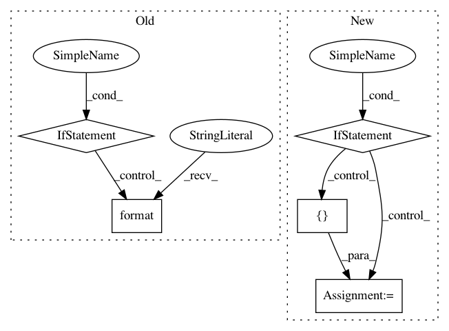

18cdb177d7e87c34cdbc8245ce1b8e28cd070af2,dvaapp/models.py,Video,create_directory,#Video#Any#,68
Before Change
def create_directory(self, create_subdirs=True):
os.mkdir("{}/{}".format(settings.MEDIA_ROOT, self.pk))
if create_subdirs:
os.mkdir("{}/{}/video/".format(settings.MEDIA_ROOT, self.pk))
os.mkdir("{}/{}/frames/".format(settings.MEDIA_ROOT, self.pk))
os.mkdir("{}/{}/segments/".format(settings.MEDIA_ROOT, self.pk))
os.mkdir("{}/{}/indexes/".format(settings.MEDIA_ROOT, self.pk))
os.mkdir("{}/{}/regions/".format(settings.MEDIA_ROOT, self.pk))
os.mkdir("{}/{}/transforms/".format(settings.MEDIA_ROOT, self.pk))
os.mkdir("{}/{}/audio/".format(settings.MEDIA_ROOT, self.pk))
class IngestEntry(models.Model):
video = models.ForeignKey(Video)
ingest_index = models.IntegerField()
ingest_filename = models.CharField(max_length=500)
After Change
os.mkdir(d)
except OSError:
pass
if create_subdirs:
for s in ["video","frames","segments","indexes","regions","transforms","audio"]:
d = "{}/{}/{}/".format(settings.MEDIA_ROOT, self.pk, s)
if not os.path.exists(d):
try:
os.mkdir(d)
except OSError:
pass
class IngestEntry(models.Model):
video = models.ForeignKey(Video)
ingest_index = models.IntegerField()
ingest_filename = models.CharField(max_length=500)
In pattern: SUPERPATTERN
Frequency: 3
Non-data size: 5
Instances
Project Name: AKSHAYUBHAT/DeepVideoAnalytics
Commit Name: 18cdb177d7e87c34cdbc8245ce1b8e28cd070af2
Time: 2017-11-05
Author: akshayubhat@gmail.com
File Name: dvaapp/models.py
Class Name: Video
Method Name: create_directory
Project Name: NervanaSystems/nlp-architect
Commit Name: 82d819ee591297fc5943a77315ddfd22f2d320a5
Time: 2018-05-10
Author: peter.izsak@intel.com
File Name: nlp_architect/utils/text.py
Class Name: SpacyInstance
Method Name: __init__
Project Name: google/deepvariant
Commit Name: 7ed8c6bbcfb2dc0da9b1011ba21d12791239de79
Time: 2019-10-21
Author: gunjanbaid@google.com
File Name: deepvariant/postprocess_variants.py
Class Name:
Method Name: main